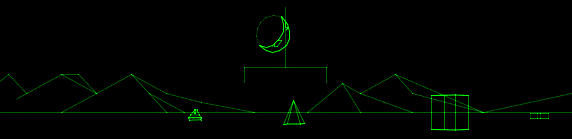

rotten > Library > Religion > Armageddon
Armageddon

 This is the end, beautiful friend...
This is the end, beautiful friend...
Before you get to enjoy the fruits of the Apocalypse, first you have to sit through Armageddon. No, not the lousy (and misnamed) movie (although a perverse God would inflict that on you as well), but the final war, the war to end all wars. No, I mean really to end all wars.
Armageddon was originally designated in Revelation, the psychedelic gore-fest that ends the New Testament in the Christian bible. Armageddon is the name of the battlefield on which the final war between good and evil will be fought out once and for all. Much like the main event at Wrestlemania, except on a cosmic scale and with no chance of a rematch.
The word Armageddon originates in lousy spelling, the ancient equivalent of writing "Warshinktron DeeCee." There's a place in Israel called Har Megiddo, which has historically been the site of many, many battles (almost as many as Pakistan). Odds are the author of Revelation, who was almost certainly not the Apostle John, was shooting for Har Megiddo and got it wrong. Possibly it was a purposeful misspelling meant to keep things vague and somewhat fictional, much in the way the Apostle Bob Kane placed Batman in "Gotham City" rather than "New York City," which is also called Gotham.
It's not at all terrifying that Har Megiddo currently lies almost precisely on the border between territories controlled by Israel and Palestine. So don't worry about that!
The scenario goes something like this: First, the Antichrist is born. The Antichrist is pretty much what you would expect, evil, presumably male and the enemy of Jesus. He's either Satan himself, or Satan's right-hand man. He amasses an army, while Christ holds his Second Coming and amasses an army of his own.
 The two armies duke it out on the fields of Armageddon, and the good guys win. Or so the story goes.
The two armies duke it out on the fields of Armageddon, and the good guys win. Or so the story goes.
One reason for the persistent popularity of Revelation is the book's artful vagueness on several important points. It's a literary Rorschach test, encouraging readers to bring their own creativity to the party.
The actual word Armageddon appears exactly once in Revelation. Evil spirits "go forth unto the kings of the earth and of the whole world, to gather them to the battle of that great day of God Almighty. (...) And he gathered them together into a place called in the Hebrew tongue Armageddon."
That's pretty much it. It's difficult to extrapolate anything from the text that follows, and in it's not even really clear that a battle actually takes place at Armageddon.
That hasn't stopped anyone from crafting elaborate Armageddon scenarios, though. Here are a few highlights, culled from various tracts regarding the end times by People In The Know:
- U.S. Attorney General John Ashcroft believes the following to be literally true: "The second coming of Christ is the visible, bodily appearance of Christ as He returns to the Mount of Olives from which He ascended back to heaven after His resurrection. After the marriage between the raptured saints and the Lamb in heaven (during the Tribulation), Christ, the Groom, goes forth to claim all of His kingdom. He rides on a white horse, followed by the saints, also on white horses (Revelation 19:11,14). It will be a sight of great wonder and majesty as Christ descends with His followers to reclaim that which Satan has temporarily wrested from His hand. The ensuing conflict between the world of righteousness and the world of darkness is called the Battle of Armageddon (Revelation 16). At the conclusion of the battle, defeated Satan is bound and cast into the bottomless pit for 1,000 years (Revelation 20)."

- Discredited 1970s Apocalypse guru Hal Lindsey: "(Moslem beliefs) about Jerusalem (are) going to become the fuse that lights off Armageddon. All of the nations of the region are going to become intoxicated over Jerusalem. Because of this religiously inspired ‘intoxication’, Jerusalem is to become a burdensome stone to the whole world, ending with all nations going to war over it. In the world of AD2002, this predicted situation is already here. It is only a matter of God’s timing before all of this explodes into an all enveloping war that will drag the planet into a holocaust so horrific that only the Coming of the Messiah Jesus can stop it."
- Some dude with a Web site believes: "When the antichrist reaches the "midst of the week" & tries to wipe out all religions & establish his world religion of self- worship of the devil & his idol, this is when he really starts getting into trouble--both with the peoples of the World & the religions of the World & their followers--& he begins having all kinds of wars, some of which we just read about in Daniel 11. He has wars with different areas & nations & peoples--no doubt with those who are the most religious & he has a lot of problems in those last days of his reign. And God will give him a lot of problems, too."
- Nostradamus says: "The accord and peace will be broken everywhere: / Friendships polluted by discord: / Hatred awakened, all faith corrupted, / And hope. Marseilles without concord." Hmm, sounds like the French and the U.S. duking out over NATO. Uh.... On second thought, let's not go there...

- Pop psychic figure Edgar Cayce: "As ye have seen those in lowly places raised to those of power in the political, in the machinery of nations' activities, so shall ye see those in high places reduced and calling on the waters of darkness to cover them. And those that in the inmost recesses of theirselves awaken to the spiritual truths that are to be given, and those places that have acted in the capacity of teachers among men, the rottenness of those that have ministered in places will be brought to light, and turmoils and strifes shall enter. And, as there is the wavering of those that would enter as emissaries, as teachers, from the throne of life, the throne of light, the throne of immortality, and wage war in the air with those of darkness, then know ye the Armageddon is at hand. (...) And those that seek in the latter portion of the year of our Lord (as ye have counted in and among men) 1936, He will appear!" Whoops! When Armageddon didn't pan out in 1936, Cayce revised the date to 1998. Whoops!
Clearly, the best way to recognize Armageddon is going to be after the fact. In other words, if we're all dead, it's a pretty good bet that the preceding war was Armageddon. Clear enough?
Pornopolis |
Rotten |
Faces of Death |
Famous Nudes
|